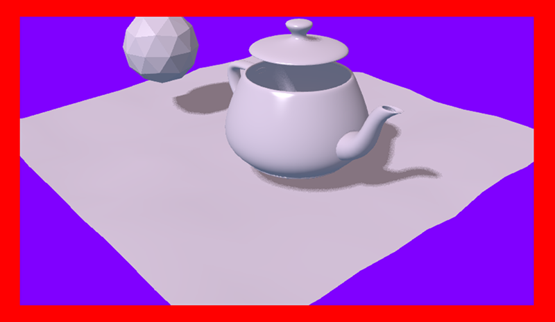
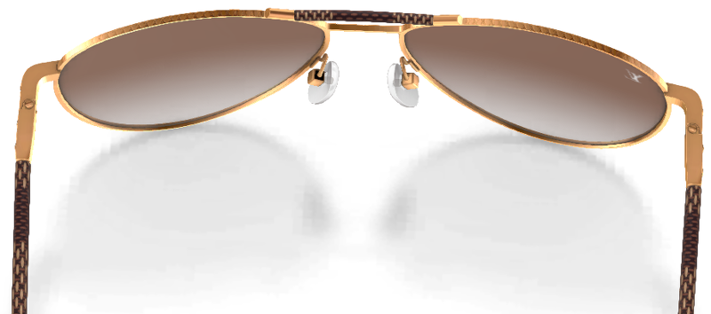
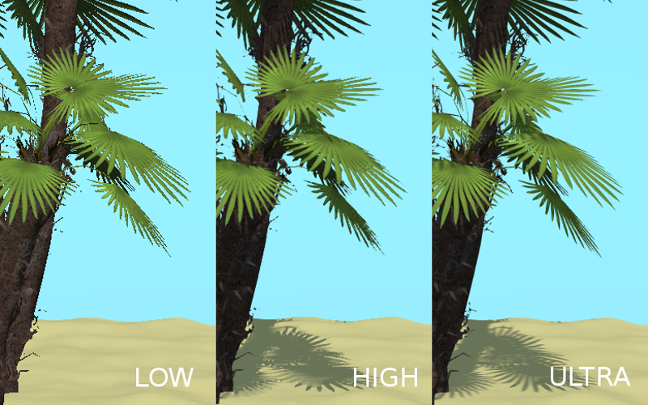

Разработчикам приложений¶
Содержание
- Разработчикам приложений
- Разработка приложений
- Прозрачный фон
- Конвертация ресурсов
- Компрессия GZIP
- Примеры кода
- Загрузка медиаресурсов приложения.
- Событийная модель
- Файловая структура SDK
- Загрузка локальных ресурсов
- Профили качества изображения
- Нестандартное расположение и ориентация элемента Canvas
- Мобильные веб-приложения
Разработка приложений¶
Для упрощения разработки рекомендуется пользоваться менеджером проектов, с помощью которого можно быстро создать базовый каркас приложения и получить шаблонный код, достаточный для загрузки простой сцены с базовым управлением камерой.
Структура кода приложения¶
Процесс инициализации и загрузки приложения состоит из нескольких последовательных стадий, что отражено в структуре кода приложения. При использовании менеджера проектов каждый вновь созданный проект типов Copy и Compile будет содержать главный JS-файл, который находится внутри SDK по следующему пути: ./projects/ИМЯ_ПРОЕКТА/ИМЯ_ПРОЕКТА.js.
Этот файл содержит шаблонный код, оформленный в виде модуля. Он регистрируется специальной конструкцией:
b4w.register("my_module", function(exports, require) {
// module code
//...
});
Таким образом, код модуля является содержимым функции, принимающей параметры exports и require.
require- метод, служащий для подгрузки библиотечных модулей движка. В шаблонном примере уже загружается ряд модулей:Наиболее важные из них это
appиdata. Модульappслужит для упрощения инициализации приложения, аdataпредоставляет методы API для загрузки данных 3D-сцены.Примечание
При именовании для удобства используется специальный префикс
m_(m_app,m_data, ...), чтобы указать, что соответствующая переменная является модулем.exports- объект, служащий для доступа к функциям модуля извне, например, из других модулей. В данном случае внешней сделана только одна функцияinit:b4w.register("my_module", function(exports, require) { ... exports.init = function() { m_app.init({ canvas_container_id: "main_canvas_container", callback: init_cb, show_fps: DEBUG, console_verbose: DEBUG, autoresize: true }); } ... });
С неё начинается инициализации приложения, и её вызов происходит как раз вне модуля:
b4w.register("my_module", function(exports, require) {
...
exports.init = function() {
m_app.init({
canvas_container_id: "main_canvas_container",
callback: init_cb,
show_fps: DEBUG,
console_verbose: DEBUG,
autoresize: true
});
}
...
});
// import the app module and start the app by calling the init method
b4w.require("my_module").init();
Далее срабатывает метод app.init - библиотечный метод, который создаст HTML-элемент Canvas и выполнит все необходимые действия для инициализации WebGL. Он может принимать множество настроек, из которых наиболее важны следующие:
canvas_container_id- id HTML-элемента - контейнера, внутри которого будет создан Canvas; по умолчанию используется элемент с idmain_canvas_container, который присутствует в главном HTML-файле приложения.callback- функция, вызываемая по завершении инициализации.
Когда инициализация приложения будет закончена, вызовется функция init_cb, указанная в параметре callback:
function init_cb(canvas_elem, success) {
if (!success) {
console.log("b4w init failure");
return;
}
m_preloader.create_preloader();
// ignore right-click on the canvas element
canvas_elem.oncontextmenu = function(e) {
e.preventDefault();
e.stopPropagation();
return false;
};
load();
}
В неё передаются следующие параметры:
canvas_elem - созданный HTML-элемент Canvas, на котором будет осуществляться рендеринг 3D-контента
success - флаг успешности инициализации; значение
falseозначает невозможность работы приложения вследствие ошибок инициализации (например, если устройством не поддерживается WebGL).
Примечание
Метод app.init назначает инициализацию на событие window.onload, поэтому в функции init_cb уже будет доступно все DOM-дерево HTML-документа.
Теперь можно начинать загрузку 3D-сцены. Это происходит в функции load, вызываемой из init_cb:
var APP_ASSETS_PATH = m_cfg.get_assets_path("my_project");
...
function load() {
m_data.load(APP_ASSETS_PATH + "my_project.json", load_cb, preloader_cb);
}
Для загрузки используется метод data.load, в который первым параметром подается путь к файлу 3D-сцены. Путь к JSON-файлу должен указываться относительно главного HTML-файла приложения. Проекты, созданные в менеджере проектов, имеют отдельную директорию для ресурсов, где стандартно располагаются JSON-файлы, и относительный путь к этой директории можно легко получить. В коде шаблонного приложения это делается заранее с введением глобальной переменной APP_ASSETS_PATH, которая затем и используется в data.load.
Второй параметр метода - функция load_cb, вызываемая после того, как завершится загрузка и подготовка к рендерингу 3D-сцены:
function load() {
m_data.load(APP_ASSETS_PATH + "my_project.json", load_cb, preloader_cb);
}
function load_cb(data_id, success) {
if (!success) {
console.log("b4w load failure");
return;
}
m_app.enable_camera_controls();
// place your code here
}
Её вызов означает переход от загрузки к началу работы приложения и, соответственно, началу рендеринга сцены. Так как этот момент - самый ранний, когда будут доступны данные 3D-сцены, то это подходящее место для инициализации и подготовки всего, что связано со сценой, объектами, анимацией и т.д. Например, здесь включается стандартная модель управления камерой при помощи метода enable_camera_controls.
Написание логики приложения¶
После инициализации и загрузки 3D-сцены приложение будет работать, реализуя заданную программистом логику: взаимодействие через устройства ввода, манипуляции с объектами сцены, управление поведением камеры и т.д.
Рассматривая процесс загрузки приложения, можно выделить несколько мест, пригодных для решения той или иной задачи.
Метод app.init, стартующий инициализацию, принимает параметры конфигурации движка. Поэтому можно заняться конфигурированием прямо перед его вызовом, например, на основе параметров из URL-строки:
b4w.register("my_module", function(exports, require) { ... exports.init = function() { var url_params = m_app.get_url_params(); if (url_params && "show_fps" in url_params) var show_fps = true; else var show_fps = false; m_app.init({ canvas_container_id: "main_canvas_container", callback: init_cb, autoresize: true show_fps: show_fps }); } ... }); b4w.require("my_module").init();
Так как инициализация происходит по событию
window.onload, то по её завершении в функции init_cb будет доступно всё DOM-дерево. Таким образом, в этот момент уже можно осуществлять какие-либо подготовительные действия, например, заниматься созданием/настройкой элементов интерфейса. Однако, 3D-сцена ещё не загружена, и её объекты ещё не доступны.По окончании загрузки 3D-сцены вызовется функция load_cb. В этот момент становятся доступными объекты сцены, поэтому все действия, связанные с ними, уже можно реализовывать в этой функции. Ряд конкретных примеров можно увидеть в приложении Code Snippets.
Для добавления логики в приложение можно пользоваться разными способами, прибегая к стандартному браузерному API и к API движка:
Обычную обработку ввода с клавиатуры/мыши/геймпада можно реализовать стандартными обработчиками событий посредством метода
addEventListener. В более сложных случаях можно воспользоваться API модуля input. Также в движке есть метод add_click_listener, который одновременно отслеживает как нажатие мыши, так и нажатие на сенсорном экране, поэтому будет удобен при написании приложений совместимых как с настольными компьютерами, так и с мобильными устройствами.Действия, которые нужно выполнять каждый кадр, растянутые во времени (например, процедурная анимация) или отложенные можно реализовать такими методами, как set_render_callback, append_loop_cb, animate и set_timeout. Также можно использовать стандартные
setTimeoutиsetInterval.Для сложной логики, зависящей и от действий пользователя и от состояния 3D-сцены, можно применять событийную модель движка на основе системы сенсоров.
Система модулей¶
Движок Blend4Web имеет модульную структуру, а именно: набор методов API движка разбит на отдельные модули, каждый из которых можно при необходимости подключить в приложение с помощью метода require. Собственный код при разработке приложения рекомендуется организовывать таким же образом в виде отдельных модулей.
Регистрация модулей.
Отдельный модуль представляет собой блок кода, обернутый особой конструкцией, с помощью которой он регистрируется:
b4w.register("my_module1", function(exports, require) {
// module code
...
});
b4w.register("my_module2", function(exports, require) {
// module code
...
});
...
Для регистрации используется метод register. Регистрация собственных модулей допустима только если их имена не пересекаются с именами имеющихся модулей API. При необходимости проверка наличия модуля с некоторым именем может быть осуществлена с помощью метода module_check:
if (b4w.module_check("my_module"))
throw "Failed to register module: my_module";
b4w.register("my_module", function(exports, require) {
// module code
...
});
Подгрузка модулей.
Подгружать собственные модули можно также как и библиотечные через метод require:
b4w.register("my_module1", function(exports, require) {
var mod2 = require("my_module2")
...
});
Инициализация приложения.
Инициализация приложения на Blend4Web обычно происходит с помощью подобного вызова:
b4w.require("my_module").init();
Здесь подгружаемый модуль my_module и его внешняя функция init являются своего рода точкой входа в приложение.
Примечание
Подгрузка модуля в глобальной области видимости происходит при помощи той же самой функции require, доступной как метод глобального объекта b4w: b4w.require("ИМЯ_МОДУЛЯ").
Использование нескольких модулей.
После создании нового проекта в менеджере проектов шаблонный JS-файл приложения будет содержать один единственный модуль. Однако, часто при разработке приложения может потребоваться логически разбить код на несколько модулей. В этом случае можно создавать как несколько модулей в одном файле, так и по принципу: один модуль - один файл.
Если в приложении используется больше одного модуля, то нужно помнить, что регистрировать модули необходимо до инициализации, иначе при попытке вызвать ещё не зарегистрированный модуль движок выдаст ошибку. Для этого в случае нескольких JS-файлов скрипт, начинающий инициализацию (содержащий точку входа в приложение), должен подключаться в главный HTML-файл приложения последним.
Прозрачный фон¶
Параметры background_color и alpha передаются в метод init, который вызывается из callback-функции загрузчика (т.е., из функции, которая вызывается сразу после загрузки сцены), например, так:
m_app.init ({
alpha: true,
background_color: [0.7, 0.7, 0.7, 1]
//this method sets the background to an opaque light gray color
});
Комбинация параметров, передаваемых в метод, определяет, как смешиваются цвета приложения Blend4Web и HTML-страницы. Возможны следующие варианты:
alpha= falseЦвет фона определяется параметром
background_colorприложения Blend4Web, цвет фона HTML-страницы не принимается в расчёт.

alpha= trueФон HTML-страницы влияет на фон приложения Blend4Web в зависимости от его прозрачности, выражаемой четвёртой компонентой параметра
background_color(alpha=background_color[3], не путать с параметромalpha, упомянутым выше).- background_color[3] = 1
Приводит к тому же результату, как если бы прозрачность была отключена (
alpha= false)- background_color[3] = 0
Используется аддитивное смешение.

Изображение выше демонстрирует HTML-страницу, содержащую приложение Blend4Web с синим [0, 0, 1] цветом, который смешивается с красным (
Red) цветом фона самой страницы, создавая более светлый оттенок.- background_color[3] > 0
Также используется аддитивное смешивание, но цвет
background_colorимеет большее влияние.На этом изображении приводится та же HTML-страница с тем же приложением Blend4Web, но параметр
alphaимеет значение 0.5, из-за чего фон приложения имеет более тёмный оттенок.
{kind=link}
Более подробно смешивание прозрачности описано в главе “Работа с цветом”.
Параметр alpha включен по умолчанию, а в качестве background_color используется прозрачный чёрный цвет [0, 0, 0, 0], т.е. в этом случае в качестве фона приложения используется фон HTML-страницы без какого-либо влияния фона самого приложения.
Прозрачный фон также может использоваться в приложениях для Веб-плеера: в них за прозрачность отвечает URL-атрибут alpha. Для использования этой возможности необходимо при создании приложения активировать параметр Background transparency (alpha) из группы параметров Web Player Params.
При использовании рендеринга неба canvas приложения Blend4Web полностью перекрывается объектами (в т.ч. небом), так что фон приложения будет полностью непрозрачным вне зависимости от настроек прозрачности.
Примечание
Рендеринг неба по умолчанию включен в новой сцене, созданной при помощи Менеджера проектов. Не забудьте отключить его, если вы собираетесь использовать прозрачный фон.
Конвертация ресурсов¶
Существующие браузеры не полностью поддерживают основные форматы медиаданных, поэтому для создания кроссбраузерных приложений, а также с целью оптимизации, необходимо использовать конвертер ресурсов.
В состав дистрибутива включен Python скрипт (scripts/converter.py) для конвертации исходных файлов в другие форматы с целью расширения спектра поддерживаемых платформ, а также для уменьшения размера ресурсов.
Запустить скрипт можно одним из двух способов.
Во-первых, вы можете воспользоваться менеджером проектов. Кнопка Convert Resources находится на главной странице менеджера проектов, в разделе Operations, расположенном в правой части экрана.
{kind=link}
Во-вторых, вы можете запустить скрипт вручную:
> cd <path_to_sdk>/scripts
> python3 converter.py [options] resize_textures | convert_dds | convert_media
Для пользователей ОС Windows:
cd <path_to_sdk>\scripts
python converter.py [options] resize_textures | convert_dds | convert_media
Примечание
Стоит отдельно отметить, что для запуска скриптов требуется интерпретатор языка Python версии 3.x
С помощью опции -d можно указать путь к директории, в которой будет производится конвертация.
При необходимости исключить некоторую директорию при конвертации, достаточно разместить в ней файл с именем .b4w_no_conv. На конвертацию во вложенных директориях это не повлияет.
Аргумент resize_textures используется для изменения размера текстур в режиме LOW.
Команды¶
Команды для конвертации:
resize_texturesуменьшает размер текстур.convert_ddsпреобразует текстуры в формат DDS.convert_pvrпреобразует текстуры в формат PVR.convert_mediaпреобразует аудио- и видеофайлы в альтернативные форматы.convert_gzipсжимает при помощи GZIP-компрессии ”.json” и ”.bin” файлы сцены, а также ”.dds” и ”.pvr” текстуры.
Команды для чистки:
cleanup_texturesудаляет текстуры низкого разрешения, создаваемые командойresize_textures.cleanup_ddsудаляет текстуры в формате DDS, создаваемые командойconvert_dds.cleanup_pvrудаляет текстуры в формате PVR, создаваемые командойconvert_pvr.cleanup_mediaудаляет аудио- и видеофайлы в альтернативных форматах, создаваемые командойconvert_media.cleanup_gzipудаляет файл, сжатые при помощи GZIP, создаваемые командойconvert_gzip.
Команды для сжатия изображений:
compress_pngсжимает файлы PNG с целью уменьшить их размер. Для работы этой команды требуется установить и прописать в переменной окруженияPATHутилиту OptiPNG.
Прочие команды:
check_dependenciesпроверяет зависимости конвертера.
Аргументы¶
-d,--dir <dir_path>включает использование альтернативного каталога для хранения сконвертированных файлов. Путь к директории задаётся параметром <dir_path>.-j,--jobs <jobs>задаёт количество задач (потоков), запущенных одновременно. Если этот параметр не задан, или если его значение равно нулю, количество потоков рассчитывается автоматически на основе количества процессоров.-v,--verboseвключает выдачу дополнительной информации о конвертируемых файлах. Например, при преобразовании текстур в формат DDS скрипт будет показывать процент готовности для каждого файла отдельно.
Зависимости¶
Убедитесь, что у вас установлены все необходимые для конвертации программы. Это можно сделать следующей командой:
> python3 <path_to_sdk>/scripts/converter.py check_dependencies
Если какая-либо программа отсутствует, то будет выведено сообщения вида:
Couldn’t find PROGRAM_NAME.
Linux
Список необходимых программ можно посмотреть в таблице:
Название |
Пакет в дистрибутиве Ubuntu 16.04 |
|---|---|
| ImageMagick | imagemagick |
| NVIDIA Texture Tools | libnvtt-bin |
| Libav | libav-tools |
| FFmpeg | ffmpeg |
| PVRTC | устанавливается вручную |
Примечание
Пользователи Linux могут дополнительно установить пакет qt-faststart, служащий для оптимизации загрузки медиаданных.
Windows
Для пользователей ОС Windows нет необходимости устанавливать эти пакеты, так как они уже находятся в составе SDK.
macOS
Пользователи mac OS могут установить менеджер пакетов brew, а затем с его помощью установить некоторые недостающие пакеты.
Перед началом установки пакетов произведите установку библиотек libpng и libjpeg, выполнив следующие команды в консоли:
> brew install libpng
> brew install libjpeg
Теперь можно приступать к установке необходимых зависимостей:
> brew install imagemagick
> brew install --with-theora --with-libvpx --with-fdk-aac ffmpeg
Для установки NVIDIA Texture Tools необходимо склонировать репозиторий, выполнив следующую команду:
> git clone https://github.com/TriumphLLC/NvidiaTextureTools.git
Теперь можно произвести сборку и установку пакета:
> cd NvidiaTextureTools
> ./configure
> make
> make install
Форматы данных¶
Преобразование происходит по схеме:
- для аудио (convert_media):
- ogg (ogv, oga) -> mp4
- mp3 -> oga
- mp4 (m4v, m4a) -> oga
- webm -> m4a
Рекомендуется использовать в качестве базового формата ogg, в этом случае для обеспечения кросс-браузерной совместимости потребуется только преобразование из ogg в mp4. Пример файла на входе: file_name.ogg, пример файла на выходе: file_name.altconv.mp4.
- для видео (convert_media):
- ogg (ogv, oga) -> m4v / seq
- mp3 -> webm / seq
- mp4 (m4v, m4a) -> webm / seq
- webm -> m4v / seq
Рекомендуется использовать в качестве базового формата WebM, в этом случае для обеспечения кросс-браузерной совместимости потребуется только преобразование из webm в m4v (из webm в seq для iPhone). Пример файла на входе: file_name.webm, пример файла на выходе: file_name.altconv.m4v.
- для изображений (convert_dds):
- png -> dds/pvr
- jpg -> dds/pvr
- bmp -> dds/pvr
- gif -> dds
Пример файла на входе: file_name.jpg, пример файла на выходе: file_name.jpg.dds.
В целях оптимизации работы приложения существует возможность использования текстур min50 (уменьшенных вдвое) и текстур в форматах DDS и PVRTC. Для этого при инициализации приложения необходимо передать следующие параметры:
exports.init = function() {
m_app.init({
// . . .
assets_dds_available: true,
assets_min50_available: true,
// . . .
});
// . . .
}
Примечание
Для использования текстур, сжатых в формате PVRTC, необходимо заменить эту строку кода
assets_dds_available: true,
следующей:
assets_pvr_available: true,
В этом случае движок будет загружать текстуры в формате PVRTC, если они есть в папке ./assets/.
Формат компрессии текстур DDS¶
Текстуры в формате DDS занимают меньше места в памяти (в 4 раза меньше для изображения в формате RGBA и в 6 раз меньше для изображения в формате RGB), но при их использовании следует иметь в виду, что:

Текстуры
DDSмогут не работать на некоторых устройствах, особенно мобильных, т.к. не все такие устройства поддерживают расширениеWEBGL_compressed_texture_s3tc;поскольку сжатие в формате
DDSосуществляется с потерями, могут быть заметны артефакты сжатия, особенно на картах нормалей и смешивания; для таких текстур рекомендуется отключать сжатие.Артефакты сжатия формата
DDSособенно хорошо заметны на границах тени.
{kind=link}
При экспорте сцены из Blender в формат JSON (но не в формат HTML), DDS-текстуры будут подключены автоматически, если они имеются в наличии.
Текстуры могут быть конвертированы в формат DDS с помощью менеджера проектов или с помощью скрипта scripts/converter.py, который был описан выше.
Формат компрессии текстур PVRTC¶
PVRTC - другой формат компрессии текстур, преимущественно используемый на устройствах iOS. В некоторых случаях он позволяет создавать файлы текстур размером вдвое меньше, чем при использовании формата DDS.
Движок поддерживает два метода сжатия: 2-bpp (два бита на пиксель) и 4-bpp (четыре бита на пиксель).
Как и в случае с форматом DDS, текстуры, сжатые с использованием алгоритма PVRTC, могут не работать на некоторых устройствах, особенно мобильных, так как для корректной работы этого формата сжатия требуется поддержка расширения WebGL IMG_texture_compression_pvrtc.
Библиотеки и SDK PVRTC доступны в версиях для операционных систем Windows, Linux и macOS. Дистрибутивы можно загрузить с веб-сайта Power VR Insider.
Движок Blend4Web использует консольную утилиту PVRTC. Для того, чтобы использовать её, необходимо добавить путь к ней в переменную окружающей среды PATH, например, так:
export PATH = <InstallDir>\PVRTexTool\CLI\<PLATFORM>\
Здесь <InstallDir> - директория, в которой находится PVRTexTool, а <PLATFORM> - папка, содержащая версию утилиты, подходящую для вашей операционной системы, например, \Windows_x86_64\ для 64-битной версии Windows.
Примечание
В Windows переменные окружающей среды можно установить из диалогового окна Система (для Windows 8 и 10) или Свойства (для Windows 7 и Vista), выбрав Дополнительные параметры системы -> Переменные среды, или с помощью консольных команд:
SET PATH = <InstallDir>\PVRTexTool\CLI\<PLATFORM>\
После этого текстуры можно будет преобразовать в формат PVR с помощью команды convert_dds скрипта converter.py.
Формат видео SEQ¶
Файл формата .seq представляет собой раскадрированное видео. Применяется на IE 11 и iPhone, поскольку на них возникают трудности при использовании видео стандартного формата в качестве текстуры. Использование dds-формата для изображений является более оптимальным по сравнению с другими форматами.
Движком могут использоваться файлы, созданные пользователем вручную и имеющие следующие наименования: file_name.altconv.m4v, file_name.altconv.mp3 и т.д. Такие файлы необходимо размещать в одной директории с медиафайлом, используемым в Blender’e.
Вы также можете использовать бесплатную кроссплатформенную программу Miro Video Converter для конвертации медиаданных.
Компрессия GZIP¶
Типичное приложение на Blend4Web может использовать ресурсы разных форматов, начиная от стандартных HTML, JS, CSS, PNG, JPEG и заканчивая специфическими для движка json- и bin-файлами, содержащими данные сцены, а также сконвертированными изображениями в форматах DDS/PVR. Как в случае больших, так и малых по размеру приложений может встать вопрос уменьшения объёма ресурсов скачиваемых браузером, и, соответственно, уменьшения времени ожидания пользователем.
Обычно на сервере, содержащем веб-приложение, настраивается кеширование, что во многом решает эту проблему. Также на сервере может быть настроена GZIP компрессия для определённых форматов файлов, позволяя передавать их в запакованном виде, экономя сетевой трафик.
Если говорить о специфических для движка форматах, то GZIP компрессию имеет смысл применять для JSON, BIN, DDS и PVR. JSON и BIN - могут содержать большие объёмы информации как главные файлы сцены. DDS и PVR тоже могут быть довольно велики (особенно по сравнению со стандартными PNG/JPEG), а так как это файлы текстур, то в приложении их может использоваться довольно много. Также не менее важно то, что файлы данных форматов хорошо подвергаются сжатию. Лучшим вариантом решения будет настройка использования GZIP для этих форматов на сервере.
Однако, если по каким-либо причинам это сделать невозможно, то есть вариант включить это на уровне конкретного приложения.
Движок поддерживает загрузку запакованных ресурсов с расширением .gz. В проекте типа WebPlayer JSON для этого нужно передать URL-параметр compressed_gzip. При разработке же собственного приложения необходимо будет передать конфигурационный параметр assets_gzip_available при инициализации приложения:
var m_app = require("app"); m_app.init({ canvas_container_id: "main_canvas_container", callback: init_cb, show_fps: DEBUG, console_verbose: DEBUG, autoresize: true, assets_gzip_available: true });
При этом будет требоваться наличие сжатых .gz файлов рядом с оригинальными. Например:
my_project/ assets/ my_scene.json my_scene.json.gz my_scene.bin my_scene.bin.gz
То же самое касается файлов .dds и .pvr и их сжатых вариантов .dds.gz и .pvr.gz.
Примечание
При отсутствии сжатого .gz файла движок загрузит оригинальный с соответствующим сообщением в консоли браузера.
Для того, чтобы сгенерировать все необходимые файлы, запакованные при помощи GZIP, достаточно выполнить команду convert resources из интерфейса менеджера проектов. Также это можно сделать и из консоли, запустив скрипт ./scripts/converter.py с командами compress_gzip - для генерации и cleanup_gzip - для удаления.
Примеры кода¶
В составе SDK присутствует приложение Code Snippets, демонстрирующее примеры использования функционала движка.
На данный момент приложение включает в себя следующие примеры:
Bone API - пример управления положением отдельных костей скелета
Camera Animation - создание процедурной анимации камеры
Camera Move Styles - переключение режимов управления камерой
Canvas Texture - пример работы с canvas-текстурой
Change Image - пример изменения текстуры на лету
Custom Anchors - процедурное создание аннотаций
Dynamic Geometry - процедурное изменение геометрии
Gamepad - пример управления персонажем с помощью геймпада
Gyro (Mobile Only) - пример работы с гироскопом мобильных устройств
Instancing - копирование объектов сцены
Lines - рендеринг процедурных линий
Material API - изменение свойств материалов и замена материалов объекта
Morphing - использование ключей деформации объекта
Multitouch (только для мобильных устройств) - использование мультитач-сенсора
Pathfinding - расчёт пути с использованием навигационного меша
Ray Test - использование функционала испускания лучей для определения препятствий
VR - пример приложения виртуальной реальности
Webcam - пример использования потока медиаданных с веб-камеры
Приложение Code Snippets доступно по пути ./apps_dev/code_snippets/code_snippets_dev.html. Также оно доступно по ссылке из файла index.html в корне SDK.
Загрузка медиаресурсов приложения.¶
Для упрощения обслуживания проектов и развертывания сервера храните медиаданные приложений (сцены, текстуры, звуки и т.п.) отдельно от прочих файлов проекта (JavaScript, CSS, HTML и пр.). Папка медиаресурсов располагается по адресу projects/my_project/assets в каталоге SDK.
Для загрузки файлов из директории (например, с помощью метода load()) используйте метод get_assets_path():
m_data.load(m_config.get_assets_path("my_project") + "loaded_scene.json", load_cb);
Такой подход гарантирует, что приложение (как разрабатываемое, так и собранное или развёрнутое) сможет загружать медиаресурсы вне зависимости от того, на какой стадии разработки оно находится.
Событийная модель¶
Событийная модель предоставляет унифицированный интерфейс для описания изменения состояний 3D сцены, упрощая обработку событий физики и действий пользователя.
Сенсоры¶
Основным блоком событийной модели является сенсор (sensor). Сенсор является программной сущностью, которая выдаёт на выходе единственное числовое значение, в большинстве случаев это либо 1 (единица), либо 0 (ноль). Некоторые сенсоры также несут полезную нагрузку (payload), которую можно получить в функции-обработчике множества с помощью соответствующего API. Например, сенсор трассировки лучей (Ray Sensor) предоставляет относительную длину луча пересечения.
Опрос значений сенсоров не доступен пользователю в виде API. Вместо этого, каждый сенсор должен присутствовать в одном или нескольких множествах (sensor manifold). Множество является логическим контейнером, ассоциированным с объектом на сцене. Оно генерирует ответ на определенный набор событий сенсоров в виде вызова функции-обработчика. Для определения множества необходимо иметь следующую информацию (см. также описание функции create_sensor_manifold в документации по API):
Объект-носитель множества (например, бросаемый объект).
Уникальный идентификатор множества (например, “IMPACT”).
Тип вызова функции-обработчика (варианты:
CT_POSITIVE- положительный результат логической функции,CT_CONTINUOUS- каждый кадр при положительном результате логической функции и один раз при нулевом,CT_LEVEL- любое изменение значения результата логической функции,CT_SHOT- одномоментный скачок результата логической функции,CT_TRIGGER- переключение результата логической функции,CT_CHANGE- любое изменение любого из сенсоров).Массив сенсоров.
Логическая функция, определяющая при какой комбинации состояний сенсоров вызывается функция-обработчик.
Функция-обработчик.
Необязательный параметр, который может быть передан в функцию-обработчик.
Более подробно об API, используемых в событийной модели движка, описано в документации модуля controls.
Пример¶
Поставлена задача озвучить удар бросаемого камня так, чтобы при ударе о различные среды (например, земля и стена) выводился характерный звук. На сцене в Blender’е имеются ограничивающие меши с физическими материалами, их идентификаторы “TERRAIN” и “WALL”. На сцене также присутствует бросаемый физический объект с названием “Stone”.
Определим по одному сенсору соударения (Collision Sensor) для каждой среды, по типу издаваемого звука.
// import the modules
var m_scenes = b4w.require("scenes");
var m_controls = b4w.require("controls");
// get the object being thrown
var stone = m_scenes.get_object_by_name("Stone");
// create the sensors
var sensor_impact_terrain = m_controls.create_collision_sensor(stone, "TERRAIN");
var sensor_impact_wall = m_controls.create_collision_sensor(stone, "WALL");
Добавим сенсоры в массив. В качестве логической функции используем логическое ИЛИ. В обработчике напишем код для воспроизведения звука. Создадим множество сенсоров с идентификатором “IMPACT” и типом CT_SHOT (одномоментный).
// array of the sensors
var impact_sens_array = [sensor_impact_terrain, sensor_impact_wall];
// manifold logic function
var impact_sens_logic = function(s) {return (s[0] || s[1])};
// callback
var impact_cb = function(obj, manifold_id, pulse) {
// NOTE: it's possible to play both sounds simultaneously
if (m_controls.get_sensor_value(obj, manifold_id, 0) == 1) {
// ...
console.log("play the terrain impact sound");
}
if (m_controls.get_sensor_value(obj, manifold_id, 1) == 1) {
// ...
console.log("play the wall impact sound");
}
}
// create the manifold
m_controls.create_sensor_manifold(stone, "IMPACT", m_ctl.CT_SHOT,
impact_sens_array, impact_sens_logic, impact_cb);
При столкновении объекта “Stone” с любым из физических материалов “TERRAIN” или “WALL” происходит вызов функции-обработчика. Внутри этой функции получим значения обоих сенсоров по их индексу в массиве сенсоров (0 - “TERRAIN”, 1 - “WALL”). Значение сенсора = 1 (активный) означает, что произошло столкновение с соответствующим физическим материалом. В результате воспроизводится соответствующий звук (код не показан).
Файловая структура SDK¶
- addons
- blend4web
аддон Blender
- apps_dev
исходный код приложений SDK
- code_snippets
исходные файлы приложения Code Snippets
- scripts
исходные файлы самих примеров использования API Blend4Web
- dairy_plant
исходные файлы приложения “Молочный завод” (доступно только в SDK Pro)
- demos_animation
исходные файлы анимационных примеров
- demos_environment
исходные файлы примеров работы с окружающей средой
- demos_interactivity
исходные файлы примеров интерактивности
- demos_materials
исходные файлы примеров материалов
- demos_media
исходные файлы примеров работы с медиаресурсами
- demos_particles
исходные файлы примеров работы с частицами
- demos_physics
исходные файлы примеров работы с физикой
- demos_postprocessing
исходные файлы примеров работы со спецэффектами
- farm
исходные файлы приложения “Ферма” (доступно только в SDK Pro)
- fashion
исходные файлы приложения “Показ мод” (доступно только в SDK Pro)
- flight
исходные файлы приложения “Остров”
- new_year
исходные файлы открытки “С новым годом 2015”
- project.py
скрипт для разработчиков приложений
- space_disaster
исходные файлы приложения Space Disaster
- tutorials
исходные файлы обучающих примеров Blend4Web
- victory_day_2015
исходные файлы открытки “День победы 70”
- viewer
исходные файлы приложения для просмотра сцен Viewer
- webplayer
исходные файлы веб-плеера
- website
исходные файлы приложений, размещаемых на официальном сайте Blend4Web
- blender
исходные файлы сцен в формате Blender
- csrc
исходный код бинарной части экспортера движка и других утилит на языке C
- deploy
директория с ресурсами для размещения на сервере (исходные файлы сцен, скомпилированные приложения и документация)
- api_doc
документация API движка для разработчиков (собирается автоматически, на основе исходного кода движка)
- apps
3D-приложения, предназначенные для развертывания, директория дублирует apps_dev
- common
Файлы скомпилированного движка. Используются приложениями из состава SDK (отсюда и название).
- assets
медиаданные приложения: сцены, текстуры, звуковые файлы
- doc
настоящее руководство пользователя в формате HTML, собирается автоматически из doc_src
- webglreport
Приложения, выводящее информацию о WebGL
- distfiles
списки сборщика дистрибутивов
- doc_src
исходный код настоящего руководства пользователя на языке разметки reST
- index.html и index_assets
файлы главной веб-страницы SDK
- license
файлы с текстами лицензионных соглашений
- Makefile
файл сборки для компиляции движка, приложений и документации
- projects
каталог пользовательских проектов
- README.rst
файл README
- scripts
скрипты
- check_resources.py
скрипт для проверки и сообщения о неиспользуемых ресурсах (изображения и звуки, на которые ссылаются экспортируемые файлы)
- compile_b4w.py
скрипт для сборки кода движка и приложений
- converter.py
скрипт, осуществляющий: уменьшение разрешения текстур вдвое, компрессию текстур в формат DDS, конвертацию звуковых файлов в форматы mp4 и ogg
- custom_json_encoder.py
форк Python-модуля json, сортирует ключи по алфавиту в обратном порядке
- gen_glmatrix.sh
скрипт для генерации математического модуля на основе исходных файлов из репозитория glMatrix 2
- graph.sh
генератор текущего графа сцены в формате svg, используется для отладки рендеринга
- make_dist.py
сборщик дистрибутивов
- memory.sh
скрипт для проверки обычной (RAM) и видео-памяти (VRAM)
- mod_list.py
скрипт для генерации списка модулей, используемых в приложениях
- plot.sh
построитель графиков отладочной информации
- process_blend.py
скрипт для автоматического переэкспорта всех сцен из состава SDK
- remove_alpha_channel.sh
скрипт для удаления альфа-канала изображения
- screencast.sh
скрипт для записи видео с экрана
- shader_analyzer.py
скрипт, запускающий локальный веб-сервер, который осуществляет подсчет сложности шейдеров
- translator.py
скрипт для сборки файлов с переводами аддона
- shaders
GLSL-шейдеры движка
- src
основной исходный код ядра движка
- addons
исходный код дополнений движка
- ext
исходный код внешних объявлений, формирующих API движка
- libs
исходный код библиотек
- tmp
директория для временных файлов (например, для Fast Preview)
- tools
различные инструменты для сборки движка, приложений и конвертации ресурсов
- converter_utils
сборки утилит для конвертации ресурсов
- closure-compiler
компилятор Google Closure, файлы исключений к нему, генераторы файлов исключений
- glsl
- compiler
компилятор GLSL-шейдеров движка
- pegjs
грамматики парсер-генератора PEG.js для реализации препроцессора GLSL, а также скрипт для генерации модулей парсеров из этих грамматик
- yuicompressor
утилита для сжатия файлов CSS
- uranium
исходный код и скрипты сборки физического движка Uranium (форк Bullet)
- VERSION
содержит текущую версию движка
Загрузка локальных ресурсов¶
Рендерер движка является Web-приложением, и его работа происходит при просмотре HTML-файла в браузере. После инициализации происходит загрузка ресурсов (сцен, текстур), которая подчиняется правилу ограничения домена, запрещающему, в частности, загрузку из локальной директории.
Начиная с версии 15.02, в состав Blend4Web SDK входит сервер разработки, решающий проблему загрузки локальных ресурсов.
Профили качества изображения¶
Для поддержки различных по функциональности платформ в движке реализовано несколько профилей качества изображения:

низкое качество (
P_LOW) - отключен ряд функций (тени, динамическое отражение, постпроцессинг), размер текстур для сборочной версии уменьшен вдвое, антиалиасинг отключенвысокое качество (
P_HIGH) - используются все запрошенные сценой функции, метод антиалиасинга FXAAмаксимальное качество (
P_ULTRA) - вдвое увеличено разрешение рендеринга, увеличено разрешение карт теней, метод антиалиасинга SMAA (используется более высокое качество, скорость работы ниже).пользовательское качество (
P_CUSTOM) - любой параметр качества может иметь любое доступное значение. Используется, если необходимо вручную задать некоторые параметры. По умолчанию используются настройки, аналогичные профилюHigh.
{kind=link}
Переключение профилей качества осуществляется программно, до инициализации контекста WebGL. Профиль по умолчанию P_HIGH.
var m_cfg = b4w.require("config");
var m_main = b4w.require("main");
m_cfg.set("quality", m_cfg.P_LOW);
m_main.init(...);
Разработчики приложений могут также установить параметр quality при инициализации движка с использованием дополнения app.js:
var m_cfg = b4w.require("config");
var m_app = b4w.require("app");
m_app.init({
canvas_container_id: "body_id",
quality: m_cfg.P_HIGH
});
Нестандартное расположение и ориентация элемента Canvas¶
Элемент Canvas, на котором осуществляется рендеринг, может изменять своё местоположение относительно окна браузера. Это может происходить в результате манипуляций, проводимых над DOM-деревом, либо в результате скроллинга страницы, что особенно актуально для неполноэкранных приложений.
В большинстве случаев это не будет никак сказываться на работе приложения. Однако для событий, связанных с положением курсора мыши или позицией касания на touch-устройстве, возможно получение некорректных результатов. Это происходит, потому что координаты, получаемые из соответствующих событий, принадлежат системе отсчета относительно окна браузера, а движок работает с координатами в системе отсчета именно Canvas элемента (верхний левый угол элемента).
Если верхний левый угол Canvas’а совпадает с верхним левым углом окна браузера, и его местоположение не будет изменяться, то достаточно использовать координаты event.clientX и event.clientY соответствующего события либо функции API get_coords_x() и get_coords_y():
var m_mouse = require("mouse");
// . . .
var x = event.clientX;
var y = event.clientY;
// . . .
var x = m_mouse.get_coords_x(event);
var y = m_mouse.get_coords_y(event);
// . . .
В случае более сложных манипуляций с положением элемента Canvas (скроллинг отдельных элементов страницы, смещение относительно левого верхнего угла окна браузера, манипуляции с DOM-деревом) требуется получить корректно рассчитанные координаты. Это можно сделать при помощи вышеупомянутых методов get_coords_x() и get_coords_y() с
trueв качестве третьего параметра.
var m_mouse = require("mouse");
// . . .
var x = m_mouse.get_coords_x(event, false, true);
var y = m_mouse.get_coords_y(event, false, true);
// . . .
Другой вариант - использовать метод client_to_canvas_coords(), как на следующем примере:
var m_cont = require("container");
var _vec2_tmp = new Float32Array(2);
// . . .
var coords_xy = m_cont.client_to_canvas_coords(event.clientX, event.clientY, _vec2_tmp);
// . . .
Мобильные веб-приложения¶
Возможность масштабирования всей веб-страницы на мобильных устройствах также может приводить к смещению элемента Canvas. Описанные выше решения годятся и для этого случая, однако, в качестве альтернативы можно запретить масштабирование вовсе и избежать подобных проблем. Для этого достаточно в заголовке страницы добавить следующий мета-тег:
<meta name="viewport" content="width=device-width, initial-scale=1.0, user-scalable=no">
В некоторых случаях может потребоваться зафиксировать определённую ориентацию мобильного устройства (например, если вы не хотите создавать отдельные варианты интерфейса для ландшафтной и портретной ориентации). Поскольку штатный API для фиксации экрана - экспериментальный и не распространён широко, это проще сделать при помощи правил CSS.
Для сохранения ориентации в ландшафтном режиме можно установить вращение элемента <html> на 90 градусов в портретном режиме:
@media (orientation : portrait) {
html {
position: absolute;
width: 100vh;
height: 100vw;
overflow: hidden;
-moz-transform: rotate(90deg);
-ms-transform: rotate(90deg);
-webkit-transform: rotate(90deg);
transform: rotate(90deg);
-moz-transform-origin: top left;
-ms-transform-origin: top left;
-webkit-transform-origin: top left;
transform-origin: top left;
left: 100%;
}
}
В свою очередь, правило CSS для использования только портретного режима будет выглядеть следующим образом:
@media (orientation : landscape) {
html {
position: absolute;
width: 100vh;
height: 100vw;
overflow: hidden;
-moz-transform: rotate(-90deg);
-ms-transform: rotate(-90deg);
-webkit-transform: rotate(-90deg);
transform: rotate(-90deg);
-moz-transform-origin: top left;
-ms-transform-origin: top left;
-webkit-transform-origin: top left;
transform-origin: top left;
top: 100%;
}
}